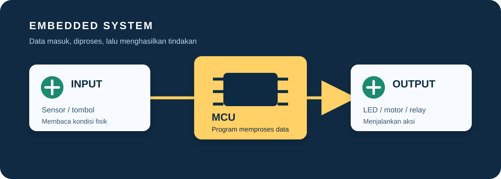

Mikrokontroler sebagai otak perangkat
Embedded system adalah komputer khusus yang ditanam di dalam perangkat untuk menjalankan tugas tertentu secara konsisten dan efisien.

Mikrokontroler vs komputer biasa
Mikrokontroler menggabungkan prosesor, memori, dan pin input-output dalam satu chip. Ia tidak ditujukan untuk menjalankan banyak aplikasi, melainkan satu program yang terus mengawasi sensor dan mengendalikan perangkat.
Karena komponennya ringkas, mikrokontroler hemat energi, murah, dan cepat merespons. Arduino Uno cocok untuk belajar dasar, sedangkan ESP32 cocok ketika proyek membutuhkan Wi-Fi atau Bluetooth.
Contoh embedded system di sekitar kita
Embedded system tidak hanya ada pada kit praktikum. Mesin cuci menggunakan pengendali untuk mengatur urutan pencucian, printer mengatur motor dan sensor posisi, sedangkan sistem pengereman kendaraan memproses data sensor dalam waktu sangat singkat. Perangkat-perangkat tersebut dirancang untuk fungsi tertentu sehingga stabilitas dan ketepatan respons lebih penting daripada menjalankan banyak aplikasi.
Pada proyek IoT, embedded system menjadi bagian yang berhadapan langsung dengan dunia fisik. ESP32, misalnya, membaca sensor, mengolah data, lalu mengirimkan hasilnya ke dashboard. Dengan demikian, IoT dapat dipahami sebagai pengembangan embedded system yang ditambah kemampuan komunikasi dan pengelolaan data.
Input, proses, dan output
Program embedded biasanya berjalan dalam loop: membaca input, mengolah kondisi, lalu mengubah output. Contohnya, jika nilai sensor cahaya lebih rendah dari batas, mikrokontroler menyalakan LED.
| Input | Tombol, sensor suhu, sensor jarak |
|---|---|
| Proses | Program pada ATmega328P atau ESP32 |
| Output | LED, buzzer, servo, relay |
| Bahasa | C/C++ Arduino atau MicroPython |
Peran teknik komputer dalam pengembangan perangkat
Teknik komputer menggabungkan pemahaman rangkaian digital, arsitektur komputer, pemrograman, dan jaringan. Saat membuat embedded system, seorang perancang perlu memilih sensor yang sesuai, menentukan cara membaca sinyal, menulis logika program, dan menguji apakah perangkat bekerja sesuai kebutuhan.
Selain fungsi utama, aspek nonfungsional juga penting. Program harus hemat memori dan energi, perangkat harus memiliki catu daya yang stabil, dan sistem perlu menangani kondisi gagal seperti sensor terlepas atau tegangan turun. Kebiasaan menguji dengan Serial Monitor, multimeter, dan dokumentasi rangkaian akan membantu menghasilkan prototipe yang dapat diandalkan.
Cara memilih board
Pilih Arduino Uno untuk latihan pin digital, analog, dan logika dasar. Pilih ESP32 jika proyek membutuhkan koneksi internet, banyak GPIO, atau performa lebih tinggi. Periksa juga kebutuhan tegangan, jumlah pin, dan konsumsi daya sebelum membeli.
Dari prototipe menuju produk
Setelah rangkaian berhasil, rapikan kabel, pisahkan catu daya beban dari catu daya logika jika diperlukan, dan buat kotak pelindung untuk perangkat. Dokumentasikan versi program, konfigurasi pin, serta hasil pengujian. Langkah-langkah kecil ini membuat proyek lebih mudah dirawat dan dikembangkan oleh orang lain.